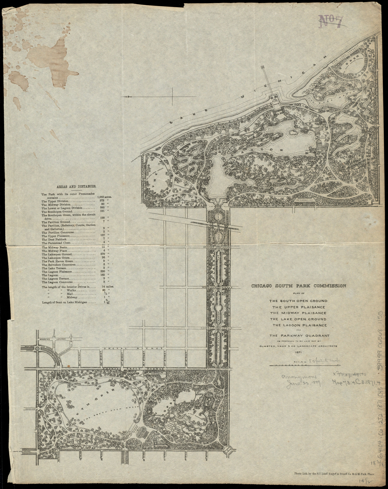
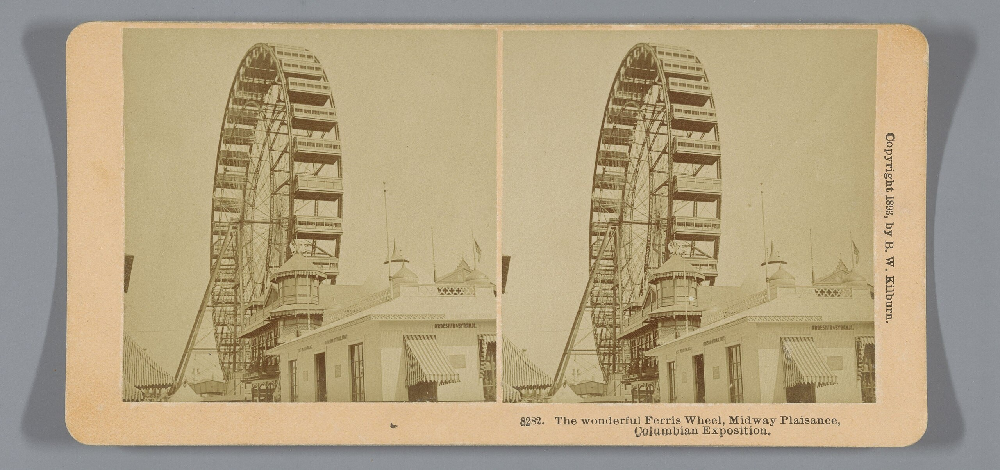
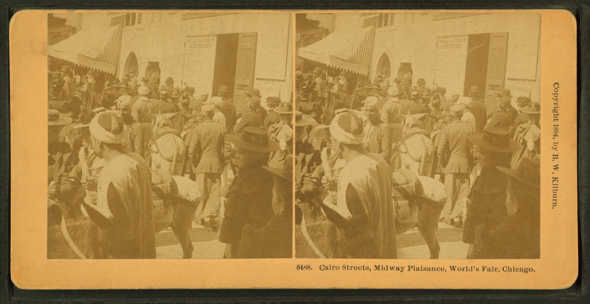
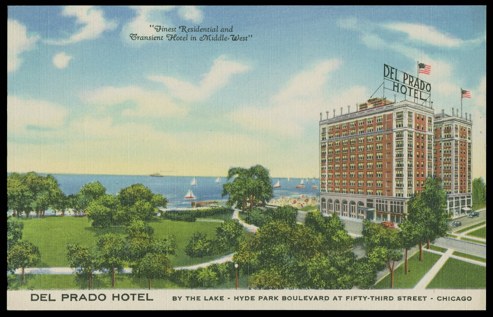
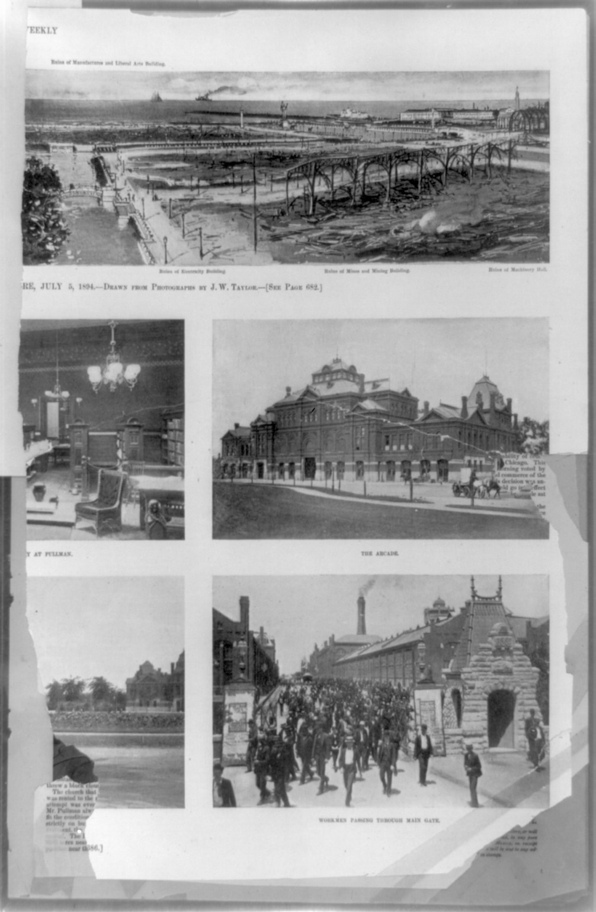

Paul Cornell bought sixty lakefront acres of farm and tavern land in 1853 and kept buying until he held about 300 acres. He named the area Hyde Park to give it a refined image, gave the Illinois Central sixty acres for a station and daily trains, and recruited families who were wealthy and white.
Cornell then led the campaign for public parks beside his own land, a campaign run by landowners whose property the parks would raise in value. The commissioners bought 1,055 acres of sandbar and marsh and hired Frederick Law Olmsted and Calvert Vaux. The Great Fire burned their drawings, and Jackson Park sat mostly unfinished for twenty years.
Chicago placed the World's Fair on the unfinished park and raised the White City in about two years. It drew about 27 million visits. Black Americans were shut out of its planning, its exhibit halls, and nearly all of its jobs. Organizers offered one Colored American Day, and Frederick Douglass worked the season from the Haiti Pavilion. At the gates, he and Ida B. Wells handed out The Reason Why the Colored American Is Not in the World's Columbian Exposition.




